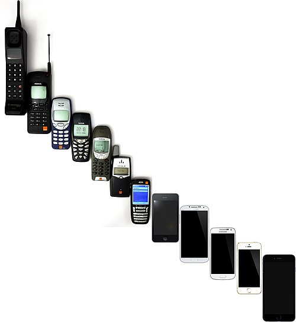

A mobile phone or cell phone is a portable telephone that allows users to make and receive calls over a radio frequency link while moving within a designated telephone service area, unlike fixed-location phones (landline phones). This radio frequency link connects to the switching systems of a mobile phone operator, providing access to the public switched telephone network (PSTN). Modern mobile telephony relies on a cellular network architecture, which is why mobile phones are often referred to as 'cell phones' in North America. Beyond traditional voice communication, digital mobile phones have evolved to support a wide range of additional services. These include text messaging, multimedia messaging, email, and internet access (via LTE, 5G NR or Wi-Fi), as well as short-range wireless technologies like Bluetooth, infrared, and ultra-wideband (UWB). Mobile phones also support a variety of multimedia capabilities, such as digital photography, video recording, and gaming. In addition, they enable multimedia playback and streaming, including video content, as well as radio and television streaming. Furthermore, mobile phones offer satellite-based services, such as navigation and messaging, as well as business applications and payment solutions (via scanning QR codes or near-field communication (NFC)). Mobile phones offering only basic features are often referred to as feature phones (slang: dumbphones), while those with advanced computing power are known as smartphones.[1] The first handheld mobile phone was demonstrated by Martin Cooper of Motorola in New York City on 3 April 1973, using a handset weighing c. 2 kilograms (4.4 lbs).[2] In 1979, Nippon Telegraph and Telephone (NTT) launched the world's first cellular network in Japan.[3] In 1983, the DynaTAC 8000x was the first commercially available handheld mobile phone. From 1993 to 2024, worldwide mobile phone subscriptions grew to over 9.1 billion; enough to provide one for every person on Earth.[4][5] In 2024, the top smartphone manufacturers worldwide were Samsung, Apple and Xiaomi; smartphone sales represented about 50 percent of total mobile phone sales.[6][7] For feature phones as of 2016, the top-selling brands were Samsung, Nokia and Alcatel.[8] Mobile phones are considered an important human invention as they have been one of the most widely used and sold pieces of consumer technology.[9] The growth in popularity has been rapid in some places; for example, in the UK, the total number of mobile phones overtook the number of houses in 1999.[10] Today, mobile phones are globally ubiquitous,[11] and in almost half the world's countries, over 90% of the population owns at least one.[12]